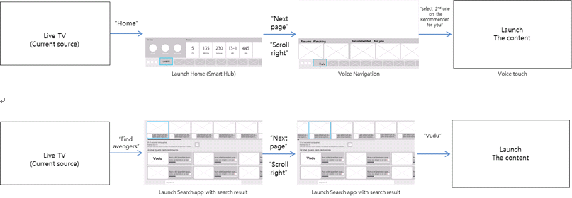
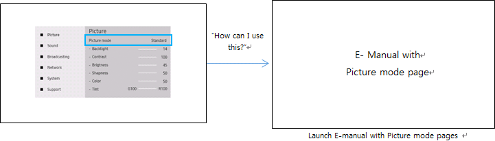

This feature is for the UI launched by shortcutting command to be completed by voice until the task is done.
This feature is for providing voice functions fit for each apps to give the benefits that D-Pad doesn’t help enough.
- • Provide holistic scenario for Eden Function Shortcut or Search Result by using Voice Navigational Command and Voice Touch.
-

- • Cover wider scenarios for providing helps or more options for the focused item by using Voice Contextual Command.
-
